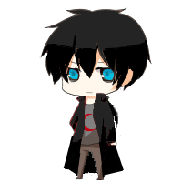

久野作：焰‧奇雷洛亞唯一的使徒，是一名連世界法則都敢挑釁的神之使徒。
職位是「紀錄者」，平常看起來都在打電動，但他基本上隨時都在工作。
從戰鬥到煮飯、洗衣等家事通通由他包，曾經對最強的神羽‧西爾雷亞挑釁過，雖然最後沒打起來。
久野作：焰‧奇雷洛亞唯一的使徒，是一名連世界法則都敢挑釁的神之使徒。
職位是「紀錄者」，平常看起來都在打電動，但他基本上隨時都在工作。
從戰鬥到煮飯、洗衣等家事通通由他包，曾經對最強的神羽‧西爾雷亞挑釁過，雖然最後沒打起來。
克羅斯．藍．捺佐：世界法則的第一位，可以說是焰的愛人(焰沒有喜歡的概念)。
總是很安靜，曾經因為逃避焰的感情而被久野作酸，差點打起來。
和久野作一樣曾經挑釁過最強的神，當然最後也沒打起來，非常珍視焰。
 焰‧奇雷洛亞：第七代創世之神，討厭自己的真名，所以一直都使用假名。
只有久野作一個使徒，所以非常珍視久野作的存在，但是仍然僅次於藍的重要性。
對他而言如果沒有藍那也不需要世界了，這點和羽很像，非常討厭自己的父親。
焰‧奇雷洛亞：第七代創世之神，討厭自己的真名，所以一直都使用假名。
只有久野作一個使徒，所以非常珍視久野作的存在，但是仍然僅次於藍的重要性。
對他而言如果沒有藍那也不需要世界了，這點和羽很像，非常討厭自己的父親。